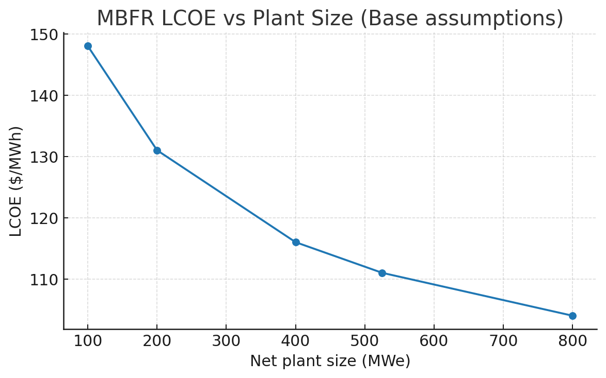
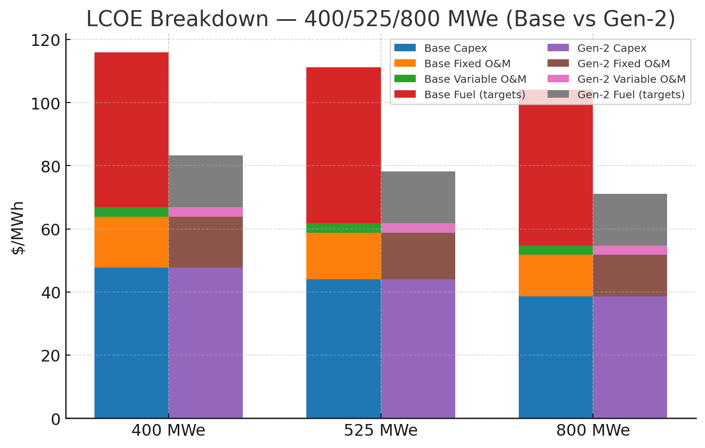

- PART 1: Theoretical foundation & system concept
- PART 2: Reference design points
- PART 3: Fuel, targets, and injector (explicit)
- PART 4: Driver and final optics (explicit spec)
- PART 4A: Maser preheat + laser panel ignition (detailed)
- PART 5: Fusion chamber, alpha management, blanket & shielding
- PART 6: Power conversion and balance of plant
- PART 7: Controls, safety, and tritium handling
- PART 8: Scaling & preliminary economics
- PART 9: Worked examples
- PART 10: Program plan
- PART 11: FAQ
- PART 12: 500 MWe reference plant — worked case (Excel v2)
- Figures
- Conclusion
Micro‑Burst Fusion Reactor (MBFR)
Scalable D–T inertial fusion for low‑cost electricity
Plain‑language overview (for non‑specialists)
- **What MBFR is:** a power plant that makes heat by firing many **tiny fusion bursts each second**. There is **no big, continuous plasma** to confine. The heat then runs a standard turbine to make electricity.
- **How one burst works:** a **small frozen fuel pellet** (deuterium + tritium) flies through the chamber. A **millimetre‑wave maser** gives it a gentle, even pre‑heat so the main **ultraviolet lasers** couple better. The lasers fire for a few **nanoseconds**, the pellet fuses, and the energy appears as **helium nuclei (alphas)** and **neutrons**. Nearby structures and a **liquid blanket** absorb this energy as heat.
- **Why bigger plants are cheaper:** the fuel‑pellet cost per MWh barely changes with size, but **big plants spread fixed costs** (drivers, shielding, tritium systems, turbine island, staff) over far more output. That’s why we aim for **400–600 megawatts electric (MWe)**.
- **Safety in plain terms:** thick shielding cuts radiation to **background‑like levels at the site fence**; tritium stays in sealed loops with **detritiation** and **permeation barriers**; double‑wall heat‑exchangers have a monitored **helium sweep** to catch leaks. This is **not “no radiation”**—it is **radiation contained on‑site**.
- **Status:** the numbers here are **reference design points** to guide engineering and costing. The path is: bench tests → single‑chamber demonstrator → multi‑chamber commercial plant.
Acronyms & units (quick glossary)
- **D / T:** deuterium / tritium (forms of hydrogen; **T is radioactive**).
- **α (alpha):** helium‑4 nucleus made by fusion; **n:** neutron.
- **kJ / MJ:** kilo / mega‑joule (1 MJ = 1,000,000 J). **MeV:** million electron‑volts (a particle‑energy unit).
- **Hz / ns / µs / ps:** per‑second / nanosecond / microsecond / picosecond.
- **MW(th) / MWe:** thermal / electric megawatts.
- **Gain (G):** fusion energy out divided by laser optical energy in.
- **η_laser / η_th→e:** laser wall‑plug efficiency / thermal‑to‑electric efficiency.
- **Rep‑rate:** shots per second per chamber.
- **FLiBe:** lithium‑fluoride–beryllium‑fluoride molten salt; **PbLi:** lead–lithium alloy.
- **DPSSL:** diode‑pumped solid‑state laser (frequency‑tripled to UV for direct drive).
- **Maser / gyrotron:** high‑power millimetre‑wave source used here for pre‑heating the pellet surface.
- **sCO₂:** **supercritical carbon dioxide** power cycle (a high‑efficiency turbine system).
- **LCOE:** levelised cost of electricity ($/MWh over the plant life). **O&M:** operations & maintenance. **WACC:** weighted average cost of capital. **CF:** capacity factor (percent of time at full power, on average). **NOAK:** nth‑of‑a‑kind plant (after the first‑of‑a‑kind).
- **ALARA:** “as low as reasonably achievable” (safety principle for radiation exposure).
- **TVL:** tenth‑value layer—thickness that cuts radiation by 10×.
- **MCNP / Serpent:** standard neutron‑transport simulation codes.
- **FPGA / PTP / PLC / RTOS:** field‑programmable gate array / Precision Time Protocol / programmable logic controller / real‑time operating system.
PART 1: Theoretical foundation & system concept
- **Principle**
- No sustained plasma or magnetic confinement. Energy is produced by **repeated micro‑bursts** of D–T fusion:
- Bursts occur at **rep‑rate** (5–20 Hz per chamber nominal; plant‑level aggregate via multiple chambers), yielding quasi‑steady thermal output.
- Each burst is followed immediately by **thermal absorption** in engineered structures; heat is buffered, then converted to electricity.
\\(\\text{D} + \\text{T} \\to \\alpha~(3.5\\,\\text{MeV}) + n~(14.1\\,\\text{MeV}), ~ Q = 17.6\\,\\text{MeV}\\).
- **Core design objectives**
- **Public safety:** near‑zero off‑site radiation dose with conservative shielding; **low‑activation** structural materials.
- **No plasma confinement systems:** only beam/optics for ignition and local magnetic optics for **charged‑particle energy management** (alpha steering). No global magnetic confinement.
- **Commercial parts first:** drivers, pumps, heat‑exchangers, control hardware sourced from existing vendors where possible.
- **Modular & scalable:** replicate identical chambers to scale plant output.
- **Quantities & terms (for reference)**
- **Fusion gain (G):** fusion energy out / laser optical energy in.
- **\\(\\eta_\\text{{laser}}\\):** laser wall‑plug efficiency (target 15–20% NOAK).
- **\\(\\eta_{th\\to e}\\):** thermal‑to‑electric efficiency (30–40% depending on cycle).
- **Net‑power condition (rule‑of‑thumb):** \\(G > 1/(\\eta_\\text{{laser}}\\,\\eta_{th\\to e})\\). With 15%×30% ⇒ **G > 22**.
PART 2: Reference design points (keep numbers consistent)
We distinguish (A) a subsystem demonstrator (tens of kWe) from (B) a plant‑scale module (~50 MWe/chamber). Mixing these previously caused contradictions.
A) Subsystem demonstrator (non‑economic prototype)
- Purpose: validate injector, alignment, final optics survival, alpha‑capture geometry, blanket heat paths, controls.
- Notional operating point:
- **Per‑shot fusion yield:** 10 kJ
- **Rep‑rate:** 20 Hz
- **Thermal power:** 200 kW(th) ⇒ **Electric ≈ 60 kWe** (at 30%).
- **Reactions/shot:** \\(10^4\\,\\text{J} / (17.6\\,\\text{MeV} \\times 1.602\\times10^{-19}\\,\\text{J/eV}) \\approx 3.55\\times10^{15}\\).
- Comment: Demonstrator proves physics & engineering at modest energies. LCOE is not a goal at this scale.
B) Plant‑scale chamber (economic module)
- Purpose: form the building block of a commercial station by clustering identical chambers.
- Notional operating point:
- **Per‑shot fusion yield:** 16–33 MJ
- **Rep‑rate:** 10–5 Hz
- **Thermal power:** 160–330 MW(th) ⇒ **Net ≈ 50 MWe/chamber** (30–35% conversion after parasitics).
- Plant composition: **8–12 chambers ⇒ 400–600 MWe net**. This range balances capex per kW, optics survivability, availability, and target‑factory economics.
> Why no 10 kWe product claims: pellet/target handling costs dominate at tiny scales. MBFR is engineered for utility‑class output, not countertop units.
PART 3: Fuel, targets, and injector (explicit)
- Fuel & targets
- Fuel: D–T in closed loops; no routine tritium releases; detritiation and permeation barriers standard.
- Target diameter: 0.5–1.0 mm; direct-drive cryo pellets (no precision hohlraums). Keep one geometry in all examples.
- Per-shot fuel bookkeeping (example): for E_fusion = 20 MJ, reactions per shot ≈ E / (17.6 MeV) ≈ 7.1e18. Mass burned ≈ ~0.059 g of D+T (5 u per reaction). Burn fraction and inventory determine actual pellet mass; unburned fuel is recovered into process loops — no disposal of unburned D/T.
- Injector
- Placement jitter: target < 100 micrometers at focus; microsecond timing windows; reject-on-fault with automatic re-arm.
- Throughput: 5–20 Hz per chamber; hot-swap injector cassettes for availability.
PART 4: Driver and final optics (explicit spec)
- Driver class: diode-pumped solid-state laser (DPSSL), frequency-tripled to ~351 nm for direct-drive absorption; programmable pulse shape (ns-scale foot plus peak).
- Per-shot optical energy (El): set by required gain G: El = E_fusion / G. Plant module example: E_fusion = 20 MJ, G = 60 -> El ≈ 0.333 MJ (optical).
- Average optical power per chamber: Pl = El × f_rep. Example above at 10 Hz -> 3.33 MW(optical).
- Wall-plug electrical power: Pe = Pl / eta_laser. With eta_laser = 0.15 -> ~22.2 MWe parasitic per chamber for the example. (This drives net-power budgeting.)
- Peak power: P_peak = El / tau. With tau = 5 ns and El = 0.333 MJ -> ~66 TW. Optical train and final optics must be designed around TW-class pulses at rep-rate.
- Final optics survivability: replaceable or flowing gas curtains or liquid films at windows; debris-resistant coatings; automated post-shot re-alignment; line-replaceable optics packs.
- Scaling options: lower rep-rate (5 Hz) at higher E_fusion (25–33 MJ) or higher rep-rate (10 Hz) at E_fusion ≈ 16–20 MJ to keep Pl in the few-MW(optical) regime.
PART 4A: Maser preheat + laser panel ignition (detailed)
Purpose. Reduce required laser optical energy and improve shot-to-shot stability by seeding a controlled, symmetric ablation layer before the nanosecond ignition pulse.
Architecture
- **One maser line (millimeter‑wave gyrotron)** aimed collinearly with the pellet flight path, followed by
- **Panels of UV laser beamlets** (192–384 total) arranged quasi‑icosahedrally around the chamber for symmetric direct drive.
Maser (mm‑wave) preheat
- **Source type:** high‑power gyrotron maser (170–240 GHz). Off‑the‑shelf class is **~1 MW CW**; we use **pulsed 20–200 µs**.
- **Beam delivery:** Vlasov launcher → quasi‑optical mirrors → CVD‑diamond window → focusing mirror to **w0 ≈ 0.5–1.0 mm** at pellet.
- **Why mm‑wave works here:** cryo D‑T is nearly transparent; we intentionally add a **lossy absorbing skin** on the pellet (see below) so the maser deposits energy in a **few‑µm layer**, producing a gentle, uniform **pre‑ablation plume** without bulk preheat.
- **Absorbing skin options (any one):**
- **Pulse/energy budget (reference chamber, 20 MJ shot):**
- Maser pulse **1.0 MW × 50 µs ≈ 50 J** at target (η_delivery ≥ 0.7 with clean optics).
- This produces **pre‑ablation mass loss ~10–50 ng** and a **low‑Z plasma halo** of thickness **~50–200 µm** at **T_e ~ 0.5–2 eV**.
- Benefit: raises UV **absorptivity** and smooths laser imprint; empirically target **10–20% reduction** in required UV optical energy for the same areal‑density history.
- **Timing:** fire at **t = −30 to −3 µs** before UV foot. Exact value set by plume expansion speed; hold **laser‑on** only if pellet is inside the capture gate.
- **Pointing/jitter:** maser spot concentric with predicted UV centroid to **≤100 µm**; power stability **±2%** shot‑to‑shot; sync jitter **≤200 ns** vs UV foot.
- **Safety/ops:** interlocked beam‑dump, stray mm‑wave detectors, mirror/ window temperature and vacuum interlocks; automatic power derate on emission drift.
1) Graphitic micro‑foil 1–3 µm (high mm‑wave loss tangent);
2) SiC‑doped polymer varnish ≤2 µm (burn‑off clean);
3) CNT‑doped aerogel over‑coat ≤5 µm (sintered network);
4) Thin metallic nano‑mesh (Al or Cu) ≤0.5 µm with perforations to avoid spall.
UV laser ignition (panels of beamlets)
- **Wavelength:** **3ω DPSSL ≈ 351 nm** (frequency‑tripled Nd). Optional 4ω if optics allow.
- **Total optical per shot:** **E_l ≈ 0.333 MJ** (for 20 MJ fusion at **G=60**). With maser assist, design goal **E_l,goal ≈ 0.27–0.30 MJ** (to be proven).
- **Panelization:**
- **Panels:** **12** panels on an icosahedral pattern, each panel delivering **16–32 beamlets** ⇒ **192–384 beams** total.
- **Per‑beamlet energy (5 ns spike):**
- 192 beams ⇒ **~1.7 kJ/beam**, **0.35 TW/beam**;
- 256 beams ⇒ **~1.3 kJ/beam**, **0.26 TW/beam**;
- 384 beams ⇒ **~0.87 kJ/beam**, **0.17 TW/beam**.
- **Final optics:** gas curtain / thin liquid film at each window; replaceable debris shields; large‑aperture fused silica with AR at 351 nm; line‑replaceable optics cassettes.
- **Pulse shape (typical):**
- **Foot:** 1–2 ns at **5–10%** of peak to launch a gentle shock;
- **Picket(s):** optional sub‑ns pickets for imprint control;
- **Spike:** 3–5 ns to peak ablation pressure; total UV duration **≤8 ns**.
- **Beam smoothing & symmetry:** randomized **Smoothing by Spectral Dispersion (SSD)** or equivalent; distributed phase plates; per‑beam **power balance ±3%**, **timing jitter ≤50 ps**, **pointing ≤25 µm** at target.
- **Alignment & metrology:** fast imaging gates on pellet; time‑of‑flight to lock focus; Hartmann wavefront sensors per panel; auto‑trim loop between shots.
Pellet engineering (to cooperate with maser)
- **Capsule:** 0.5–1.0 mm D‑T ice on a low‑Z mandrel (or pure solid D‑T), over‑coated by **absorbing skin** per options above (total added areal density **≤ 0.02 mg/cm²**).
- **Design rule:** maser must **not** lift significant mass or raise bulk temperature—only create a controlled halo that **improves UV coupling** and **reduces laser imprint**.
- **QA:** in‑line optical thickness/roughness metrology; mm‑wave reflectometry on sample pellets; destructive tests to set allowable skin thickness variance.
Synchronization sequence (per shot)
- **Pellet enters gate:** position/velocity measured → predictive aim point.
- **Maser ON:** 20–200 µs window at chosen power → form halo.
- **Laser foot:** −2…−1 ns; confirm diagnostics within bounds.
- **Laser spike:** 0…5 ns; collect diagnostics (x‑ray framing, streak camera, back‑lit imaging).
- **Post‑shot:** optics health check; debris assessment; algorithm trims for next shot.
Failure management
- **Preheat overshoot:** plume density too high → UV back‑reflection; system vetoes spike and dumps the shot.
- **Under‑preheat:** insufficient halo → higher imprint; controller increments maser energy for subsequent shots within safe bounds.
- **Window stress:** temperature/deflection beyond limit → auto‑swap to spare cassette; reduce rep‑rate until cleared.
PART 5: Fusion chamber, alpha management, blanket & shielding
- Fusion chamber
- Geometry: 1–2 m class vessel, moderate vacuum (~10^-3 atm). Multiple line-of-sight ports: pellet injector, laser entry, diagnostics.
- First wall: cassette tiles in low-activation steel (e.g., Eurofer-class) or SiC/SiC; inner B4C coating for thermal-neutron capture; liquid or replaceable sacrificial film/window at laser ports.
- Alpha-particle energy management
- Goal: intercept a large fraction of 3.5 MeV alpha energy within centimeters of birth to reduce instantaneous wall loading.
- Method: shaped, ~10 T local fields from compact coils produce helical trajectories into coiled conductive tubes that spread heat and feed thermal buffers. At 10 T, the alpha Larmor radius is ~2–3 cm at birth; hence capture structures must reside close to the burn volume. Any uncaptured alpha joins blanket heating.
- Neutron blanket and shield stack (explicit)
- Blanket modules (inner -> outer):
- Moderator: 30–40 cm borated polyethylene or FLiBe channels to slow 14.1 MeV neutrons and capture some thermalized flux.
- Absorber/capture: B4C panels (>= 5 cm equivalent) to capture thermal neutrons.
- Bulk shielding: Heavy (barite) concrete >= 2.0 m total thickness (assume effective TVL (tenth‑value layer) ~40 cm for fast-neutron/gamma mix -> about 5 TVLs ≈ 1e5 attenuation in this stage alone).
- Structural liner: Steel 5–10 cm for structure and residual gamma attenuation.
- Outcome target: >= 1e6 overall attenuation from first-wall to biological shield exterior, driving site-boundary dose ~ background for normal operation. Final thicknesses will be set by MCNP/Serpent transport using chamber geometry and source term from the chosen yield/rep-rate.
- Thermal buffer
- Coolants: molten salt (FLiBe/FLiNaK) or liquid metal (PbLi) in multi-loop design; surge tanks smooth per-shot heat into steady thermal input for the power cycle; double-wall heat exchangers with tritium permeation barriers.
PART 6: Power conversion and balance of plant (expanded)
6.1 Thermal architecture (per chamber)
- Thermal source: each chamber produces ~240 MW(th) at the 20 MJ @ 12 Hz reference.
- Primary coolant: FLiBe (baseline) or PbLi (variant).
- Nominal hot/cold temps: 650→550 °C (FLiBe) or 520→420 °C (PbLi).
- Design temperature rise: 100 K across the primary loop.
- Primary mass flow (FLiBe example):
- m_dot = Q/(cp*DeltaT) = 240 MW / (2.4 kJ/kg-K * 100 K) ≈ 1000 kg/s.
- With density ≈ 1.94 t/m³, volumetric flow ≈ 0.515 m³/s per chamber.
- Primary pump power (order-of-magnitude): for loop DeltaP ≈ 0.5 MPa,
- P_pump = V_dot * DeltaP ≈ 0.515 m³/s * 0.5 MPa ≈ 0.26 MW.
- With efficiency and margins, reserve ~0.5–1.0 MW per chamber.
6.2 Thermal buffer and pulsed-to-steady smoothing
- Purpose: convert nanosecond bursts (and Hz repetition) into steady thermal input for the power block and to ride through pellet rejects.
- Design: dual molten-salt surge tanks per chamber.
- Sizing heuristic: 60 seconds of full chamber power ⇒ 14.4 GJ.
- FLiBe mass for 60 s buffer: m = E/(cp*DeltaT) ≈ 14.4 GJ / (2.4 kJ/kg-K * 100 K) ≈ 60 t.
- Volume: ~31 m³ (density ≈ 1.94 t/m³).
- Tanks include inert cover gas, level/temperature instrumentation, and isolation valves.
6.3 Power cycles
- Option A — supercritical CO₂ (sCO₂) recompression Brayton cycle (preferred at ≥500 MWe):
- Turbine inlet: 550–600 °C, ~25 MPa; thermal-to-electric efficiency 35–40%.
- Hardware: single or dual strings with compact printed-circuit recuperators; CO₂ inventory tanks; start-up heaters.
- HX interface: double-wall FLiBe→sCO₂ primary heat exchanger, LMTD 50–120 K, area ≈ 10–20×10³ m² per chamber depending on U. Helium sweep between walls for leak detection and tritium interception.
- Option B — Superheated steam Rankine:
- Main steam: 540–565 °C, 16–24 MPa, reheat optional; thermal-to-electric efficiency 33–37%.
- HX: double-wall FLiBe→water/steam once-through steam generator; strict secondary-side chemistry; tritium monitor on sweep gas.
- Option C — ORC/steam (demonstrator only): compact 1–10 MW(th) skids to keep prototype simple.
6.4 Heat exchangers (engineering notes)
- Configuration: double-wall, counter-flow, plate-and-frame or printed-circuit HX; helium sweep in inter-wall gap to detect pinhole leaks and capture permeating tritium.
- Materials: Ni-free, low-activation alloys on hot side; diffusion-barrier coatings (alumina/SiC) to cut tritium permeation by 10–100×.
- Design targets: approach temperature ≥20 K; allowable pressure drop ≤0.3 MPa per side; online DeltaP/DeltaT monitoring for fouling.
6.5 Electrical integration and auxiliaries
- Parasitics (per chamber, budgetary): primary pumps 0.5–1 MW, injector/cryo 0.5 MW, alpha-coil power 0.5 MW average, controls/plant services 0.1 MW. (Laser parasitic accounted separately.)
- Grid code: power-factor control ±0.95; LVRT/HVRT compliant; synthetic inertia via turbine control.
- Ride-through: 1–3 MWh per 10-chamber block (battery or flywheel) to handle transients and black-start auxiliaries.
- Transformers and switchgear: ISO-rated step-ups; redundant feeds for safety systems.
PART 7: Controls, safety, and tritium handling (expanded; ALARA = as low as reasonably achievable)
7.1 Control architecture
- Timing fabric: deterministic **field‑programmable gate array (FPGA)** backplane with microsecond‑class events for injector gates and maser/laser timing; **Precision Time Protocol (PTP)** grandmaster clocks; redundant time sources.
- Supervisory control: real‑time **programmable logic controller (PLC)**/**real‑time operating system (RTOS)** for thermal loops, pumps, valves, heat exchangers; safety‑instrumented functions (SIF) independent of PLC for trips.
- Per‑shot logic: pellet tracked → accept window (position < 100 µm, timing <±2 µs) → maser arm → UV-foot → UV-spike. Any out-of-bounds ⇒ veto and beam dump.
- Diagnostics: fast cameras, Doppler velocimetry, photodiodes, x‑ray framing; health of optics (temperature, strain, transmission) checked between shots.
7.2 Trip matrix (non-exhaustive)
- Injector fault: no pellet or duplicate pellet; chamber interlocks block shot.
- Targeting fault: pointing error >100 µm or timing error >2 µs.
- Optics health: window temperature/deflection over limit; debris rate over threshold.
- Shield/blanket: DeltaP high, flow low, or temperature high in primary loop.
- Radiation: in-vessel flux spikes; bioshield area monitors above setpoint.
- Tritium: sweep-gas monitors detect T over threshold; detritiation offline.
- Power block: HX leak detected; turbine trip; grid rejection.
Each trip triggers a safe state: laser inhibit, injector safe-standby, maser off, alpha-coils ramp down, primary loop to hot-standby, valves to fail-safe, detritiation to high-flow.
7.3 Safety basis and ALARA
- Design targets: site-boundary dose ~ background during normal ops; no single failure leads to off-site dose above the annual public limit.
- Classification: first wall/blanket and double-wall heat exchangers are safety-significant; interlocks and detritiation are safety-related; optics are non-safety but interlocked.
- Materials policy: low-activation steels/SiC; cobalt-free; restricted nickel.
- Remote handling: cassettes for optics, injector tips, first-wall tiles; shielded maintenance cells.
7.4 Tritium systems (closed-loop)
- Mass balance (500+ MWe plant): total burned fuel ~0.61 kg/day ⇒ ~0.31 kg/day tritium consumed in fusion; the plant must breed/recover at or above this rate with margin.
- Loops:
- Monitoring: in-line T monitors on sweep gas, stack, auxiliary rooms; continuous stack sampling with delay beds; quarterly material smear tests.
- Releases: no routine releases; any planned maintenance releases pass through DTU and are measured and recorded.
1) Pellet fabrication and storage: T handling in gloveboxes with ZrCo or LaNi4.25Al0.75 getter beds; cryo layers formed in sealed lines.
2) Primary loop interception: all double-wall heat exchangers have helium sweep; sweep gas passes through oxidizers + dryers + molecular sieves → catalytic reactors → getter beds.
3) Detritiation unit (DTU): catalytic oxidation → drying → molecular sieve/zeolite → recombiners; design capacity 5–10 g-T/day per 10-chamber block (well above normal leakage) to cover upset events.
4) Permeation barriers: alumina/SiC coatings on hot surfaces; 10–100× reduction of T flux through steel.
7.5 Availability targets
- Per-chamber availability: ≥90%; plant ≥85% capacity factor (downtime staggered across chambers).
- Critical spares: hot-standby lasers/maser tubes, injector modules, window cassettes, pump skids.
- Mean time to swap optics cassette: <2 h; injector head: <30 min.
PART 8: Scaling & preliminary economics (explicit & comparative)
8.1 Why 400 MWe and above beat smaller plants
Fuel/target cost per MWh is roughly size‑invariant if gain (G) and laser efficiency stay the same, because it tracks fusion MJ per MWh and the laser parasitic. The big wins from scale are elsewhere:
- Capex per kW falls with size (six‑tenths rule here with exponent −0.3). Small plants still need full detritiation, safety, controls, and a turbine island, so $/kW is bloated.
- Fixed O&M dilution: staffing, regulatory, DTU, and site overheads spread over more MWh.
- Shared systems: one sCO₂ block can serve multiple chambers; one DTU train can handle several loops; pooled spares improve availability at lower inventory cost.
- Factory learning for targets: getting to $0.001 per MJ needs multi‑million targets per day. That volume appears only for 400–600 MWe multi‑chamber stations; sub‑200 MWe plants stay near $0.003 per MJ (or worse).
- Availability management: with 8–12 chambers, maintenance is staggered; two‑chamber sites (≤150 MWe) take bigger hits on capacity factor.
8.2 LCOE comparison by plant size (same physics and costs)
Assumptions held constant across sizes: G = 60, laser wall‑plug = 15%, thermal‑to‑electric = 33%, WACC 8%, life 30 years, capacity factor 85%, fixed O&M 3% of capex, variable O&M $3/MWh, target cost density $0.003 per MJ. Capex scaling anchored at $4,000/kW for a 400 MWe plant with exponent −0.3.
| Net size (MWe) | Capex $/kW | Total capex ($B) | Annualized capex ($M/yr) | Fixed O&M ($M/yr) | Variable O&M ($M/yr) | Fuel (targets) ($M/yr) | Annual MWh (CF) | LCOE ($/MWh) |
| ---: | ---: | ---: | ---: | ---: | ---: | ---: | ---: | ---: |
| 100 | 6,000 | 0.60 | 53.3 | 18.0 | 2.23 | 36.7 | 0.745 M | 148 |
| 200 | 4,924 | 0.985 | 87.4 | 29.5 | 4.47 | 73.4 | 1.489 M | 131 |
| 400 | 4,000 | 1.60 | 142.1 | 48.0 | 8.94 | 146.5 | 2.978 M | 116 |
| 525 | 3,686 | 1.94 | 172.0 | 58.1 | 11.73 | 193.0 | 3.912 M | 111 |
| 800 | 3,248 | 2.60 | 230.3 | 77.9 | 17.9 | 293.8 | 5.957 M | 104 |
Figure — LCOE vs plant size:

Figure — LCOE vs plant size (Base vs Gen‑2 target costs):
Figure — LCOE breakdown by component at 400/525/800 MWe (Base vs Gen‑2):

Notes: (i) With $0.003 per MJ, fuel lands near $49/MWh at these efficiencies (this already accounts for laser parasitic reducing net MWh). (ii) Small plants are usually worse than shown because their real target cost density tends to be above $0.003 per MJ until volume ramps.
8.3 Interpreting the table
- Moving from 100 to 400 MWe cuts LCOE by roughly 30 percent, mostly from capex and O&M dilution; fuel per MWh barely changes.
- 400 to 525 MWe still helps, but the curve flattens; beyond about 600–800 MWe you trade modest LCOE gains for higher single‑site risk and tougher grid interconnection.
- Practical sweet spot: 400–600 MWe net, built from about 50 MWe chambers. Big enough to unlock factory learning and shared systems, small enough to keep risk modular and availability high.
8.4 What pushes LCOE lower
- Cheaper targets: moving factory cost from $0.003 to $0.001 per MJ drags fuel from about $49 to about $16/MWh; the 525 MWe case falls to about $78/MWh (see Part 12, Gen‑2).
- Better drivers: laser efficiency toward 20 percent or higher gain (for example, via improved coupling/maser assist) reduces the laser parasitic and lifts net per‑shot energy.
- Hotter power block: pushing sCO₂ to 38–40 percent cycle efficiency trims both fuel and $/kW (smaller turbine island per net MWe).
8.5 Bottom line
Small MBFR plants are technically feasible but not cost‑competitive. First commercial deployments should target 400 MWe and above, multi‑chamber stations, to hit credible $80–110/MWh bands now, with a path to $70–80/MWh as target factories and drivers mature.
PART 9: Worked examples (keep one‑liners exact)
- **Example 1 – Demonstrator (~60 kWe):** 10 kJ/shot × 20 Hz = 200 kW(th); at 30% ⇒ **60 kWe**.
- **Example 2 – Reactions per 10 kJ shot:** \\(E/(17.6\\,\\text{MeV}) ≈ 3.55×10^{15}\\) reactions.
- **Example 3 – Daily output (10 kJ @ 10 Hz):** 100 kW(th) × 24 h = **2.4 MWh(th)**; at 30% ⇒ **0.72 MWh(e)**.
(Corrects earlier 0.24 MWh/day figure.)
PART 10: Program plan (from paper to metal)
- **Numerics & design closure**
- Neutronics (MCNP/Serpent) for blanket, dose, breeding options.
- Thermal/CFD (COMSOL/ANSYS) for absorber, tubes, and buffer.
- Beam/optics for spot size, pulse shaping, and window/film survivability.
- **Bench hardware**
- Injector breadboard with µs timing and reject‑on‑fault.
- KJ‑class DPSSL segment test with protective optics.
- Alpha‑capture coil/tube coupon test at representative fields (≥10 T) and standoff.
- **Integrated demonstrator**
- Single‑chamber, ~60 kWe continuous; data for availability, shot‑to‑shot reproducibility, and maintenance cycles.
- **NOAK plant**
- 8–12 chamber array, 400–600 MWe net with standardized modules, spares, and target supply.
PART 11: FAQ (tight, unambiguous)
- **Is MBFR “aneutronic”?** No. D–T produces 14.1 MeV neutrons. We design for near‑zero **external** dose and low‑activation materials.
- **Do you throw away unburnt fuel?** No. The dominant cost is **target manufacturing/handling**, not fuel mass. Uncaptured alphas and neutrons are recovered as heat in blankets.
- **Do alphas ignite the next pellet?** Not across shots. Alpha self‑heating improves yield **within the same micro‑burst**; plant power runs the driver between shots.
- **Why not 10 kWe products?** LCOE is dominated by per‑shot cost at low power. Economics improve sharply at 50 MWe/chamber and multi‑chamber plants.
PART 12: 500 MWe reference plant — worked case (updated to 12 Hz)
Purpose: freeze a concrete 500+ MWe sizing using the Excel v2 baseline and expose the exact knobs to hit grid targets and LCOE.
Inputs (exact)
- Chambers = **10**
- Rep‑rate = **12 Hz** per chamber
- Fusion yield/shot = **20 MJ** (D–T)
- Gain **G = 60**; laser wall‑plug **η_laser = 15%**
- Thermal→electric **η_th→e = 33%**
- Capacity factor **CF = 85%**, WACC **8%**, life **30 yr**
- Capex scaling: **$4,000/kW** at 400 MWe, exponent **−0.3**
- O&M: fixed **3%/yr of capex**, variable **$3/MWh**
- Target cost density: **$0.003/MJ** (factory v1) and **$0.001/MJ** (Gen‑2 sensitivity)
Derived plant performance (12 Hz, G=60)
- **Net per chamber:** **52.53 MWe** (Gross **79.2**, Laser parasitic **26.67** MWe)
- **Net plant:** **525.33 MWe** (≥ 500 MWe)
- **Shots/targets per day:** **10,368,000** (whole plant)
- **Fuel mass burned:** **0.0589 mg/shot** ⇒ **0.611 kg/day** (plant)
- **Target cost per shot:** **$0.06** ⇒ **$622,080/day**
Economics (factory v1 @ $0.003/MJ)
- **Capex:** **$3,686/kW** (scaled) ⇒ **$1.94B** total
- Annual energy (net, at CF): **3.912 TWh/yr**
- Annualized capex: **$172.0M/yr**; fixed O&M **$58.1M/yr**; variable O&M **$11.73M/yr**; **targets(fuel)** **$193.0M/yr**
- **LCOE:** **$111.2/MWh**
Gen‑2 pellet factory ( $0.001/MJ )
- **Fuel cost** drops to **$16.45/MWh**; **LCOE → $78.3/MWh** (same hardware).
Shield stack for this plant (two material options)
- **Option A (FLiBe‑first):** **25 cm FLiBe channels** + **5 cm B₄C** + **2.2 m heavy concrete (barite)** + **8 cm steel** (≥ 10⁶ attenuation goal).
- **Option B (poly‑first):** **35 cm borated poly** + **5 cm B₄C** + **2.0 m heavy concrete** + **10 cm steel**.
Finals via MCNP/Serpent using the 20 MJ @ 12 Hz source term and your chamber radius.
Driver architecture (beamlet split so optics live)
- **Per‑shot optical energy:** **E_l = 0.333 MJ**. Split across **N_beams = 192–384**.
- 192 beams ⇒ **1.73 kJ/beam**, **0.346 TW/beam**
- 256 beams ⇒ **1.30 kJ/beam**, **0.260 TW/beam**
- 384 beams ⇒ **0.87 kJ/beam**, **0.173 TW/beam**
- Keep per‑beam fluence under vendor damage limits with ≥2× safety factor using enlarged clear apertures + gas curtain or liquid film at windows.
Examples (5 ns pulses):
Chamber radius ↔ wall load (design aide)
- D–T neutrons carry ~**80%** of fusion energy. At **20 MJ/shot × 12 Hz**, **P_n ≈ 192 MW** per chamber into the blanket. Average spherical wall power density (before moderation):
- **R = 1.2 m:** **10.6 MW/m²**
- **R = 1.5 m:** **6.8 MW/m²**
- **R = 1.8 m:** **4.7 MW/m²**
- **R = 2.0 m:** **3.8 MW/m²**
Use this to pick first‑wall materials and cooling; the blanket/ moderator strongly reduces what reaches structural steel.
MCNP/Serpent starter deck (skeleton)
- **Materials:**
- `m1` low‑activation steel (Fe‑Cr‑W, no Co), `m2` SiC, `m3` B4C (natural B or enriched B‑10), `m4` FLiBe, `m5` barite concrete, `m6` steel liner.
- **Cells/geometry:**
- Spherical void (radius R) as source region; inner first‑wall shell (thickness t_FW, m1 or SiC); annular moderator (m4 or borated poly); annular B4C capture layer; bulk concrete; outer steel.
- **Source (SDEF):** energy distribution peaked at 14.1 MeV; isotropic; strength set to **192 MW/chamber** neutrons. Time‑independent for average analysis.
- **Tallies:** `F4:n` flux in each layer; `*F8:n` energy deposition; dose conversion via `DE/DF` cards; track tritium production if breeding enabled.
- **Outputs:** TVL verification, dose outside bioshield, activation precursors for material choices.
> All of the above is reproduced in MBFR_500MWe_12Hz_v2.xlsx (beamlet split table, wall‑load vs radius, shield options). Adjust rep‑rate or gain to center exactly where you want on net MW and LCOE bands.
Conclusion
MBFR rethinks fusion around repeatable, modest‑yield micro‑bursts, engineered for power production first. The pathway is practical: kJ–MJ drivers at rep‑rate, simple pellets, survivable optics, near‑field alpha management, conservative shielding, and utility‑class modules clustered to 400–600 MWe. With disciplined assumptions and standard nuclear‑grade safety engineering, MBFR targets cheap, clean, scalable electricity—without the complexities of sustained plasma confinement.
Figures (schematic, not to scale)